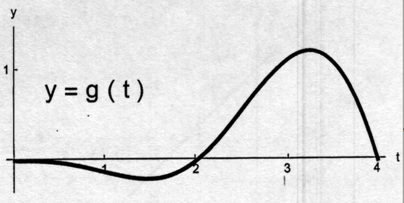

- (a)
- Circle the correct statement about \(A(2)\).
- (i)
- \(A(2) = 0\);
- (ii)
- \(A(2) > 0\);
- (iii)
- \(A(2) < 0\);
- (iv)
- none of the previous answers.
- (b)
- Circle the correct statement about \(A(3.8)\).
- (i)
- \(A(3.8) = 0\);
- (ii)
- \(A(3.8) > 0\);
- (iii)
- \(A(3.8) < 0\);
- (iv)
- none of the previous answers.
- (c)
- Circle the correct statement about \(A'(3.8)\).
- (i)
- \(A'(3.8) = 0\);
- (ii)
- \(A'(3.8) > 0\);
- (iii)
- \(A'(3.8) < 0\);
- (iv)
- none of the previous answers.
- (d)
- Find the solution of the following initiual value problem: \(y'(x) = g(x)\) and \(y(0) = 2\).
- (i)
- \(y(x) = g(x)\);
- (ii)
- \(y(x) = g(x) + 2\);
- (iii)
- \(y(x) = A(x)\);
- (iv)
- \(y(x) = A(x) + 2\);
- (v)
- \(y(x) = g'(x)\);
- (vi)
- \(y(x) = g'(x) + 2\);
- (vii)
- none of the previous answers.
- (e)
- Find the expression for \(\int _0^4 |g(t)| \d t\).
- (i)
- \(A(4)\);
- (ii)
- \(A(2) - A(4)\);
- (iii)
- \(A(4) - A(2)\);
- (iv)
- \(A(4) - 2 A(2)\);
- (v)
- none of the previous answers.
- (f)
- Find the midpoint Riemann sum for the function \(g\) on the interval \([0, 4]\) with \(n = 2\) (the
number of subintervals).
- (i)
- \(g(1) + g(3)\);
- (ii)
- \(g(0) + g(2)\);
- (iii)
- \(g(2) + g(4)\);
- (iv)
- \(2g(1) + 2g(3)\);
- (v)
- \(2g(0) + 2g(2)\);
- (vi)
- \(2g(2) + 2g(4)\);
- (vii)
- none of the previous answers.